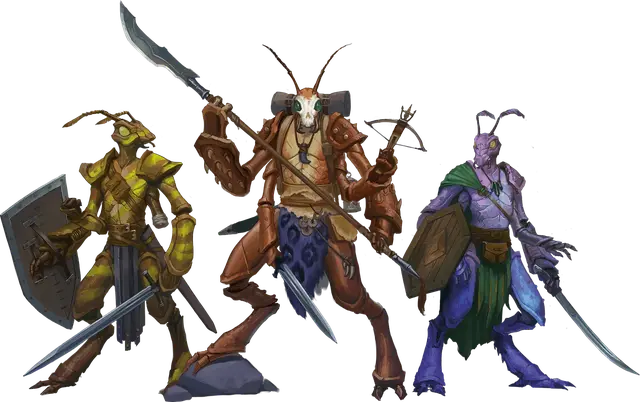

Три-крин
Thri-kreen

Создание вашего персонажа
Когда вы создаёте своего персонажа в D&D, вы решаете, является ли он представителем человеческой расы или одной из фантастических рас, включая те, что представлены в этой главе. Если вы создаёте персонажа, используя опцию расы, представленную здесь, следуйте описанным ниже правилам.
Увеличение характеристик
При определении значений характеристик вашего персонажа увеличьте одну из характеристик на 2, а другую — на 1, или увеличьте три различные характеристики на 1. Следуйте этому правилу независимо от метода, который вы используете для определения характеристик, бросаете ли вы кости или настраиваете значения.
Раздел «Быстрое создание» в выбранном вами классе даёт рекомендации по тому, какие характеристики увеличить. Вы вольны следовать этим советам или игнорировать их. Какие бы значения вы ни решили увеличить, значение ни одной характеристики не может превышать 20.
Языки
Ваш персонаж может говорить, читать и писать на Общем и ещё на одном языке, который вы и Мастер сочтёте подходящим для персонажа. «Книга игрока» содержит список распространённых языков на выбор. Мастер может свободно добавлять или удалять языки из этого списка для нужд кампании.
Вид существа
У каждого существа в D&D, включая каждого персонажа игрока, в правилах есть специальный тег, определяющий вид существа. Большинство персонажей игроков является Гуманоидами. В представленных вариантах рас указано, к какому виду существ относится ваш персонаж.
Вот список видов существ в игре в алфавитном порядке: Аберрация, Великан, Гуманоид, Дракон, Зверь, Исчадие, Конструкт, Монстр, Небожитель, Нежить, Растение, Слизь, Фея, Элементаль. Для видов не существует конкретных правил, но некоторые элементы игры различны для существ разных видов. Например, в тексте заклинания лечение ран [cure wounds] указано, что оно не действует на конструктов. Автогном является исключением из-за его особенности «Лечащая машина».
Продолжительность жизни
Типичная продолжительность жизни персонажей игроков в мультивселенной D&D составляет около века, если персонаж не умрёт насильственной смертью в приключениях. Представители некоторых рас, таких как гномы и эльфы, могут жить столетиями — факт, отмеченный в описании этих рас.
Рост и вес
Персонажи игроков, вне зависимости от расы, обычно имеют примерно тот же рост и вес, как люди в реальном мире. Если вы хотите определить рост или вес персонажа случайным образом, обратитесь к таблице «Случайный рост и вес» в «Книге игрока», и выберите строку в таблице, наилучшим образом описывающую ваше представление о персонаже.
Три-крины обладают чертами насекомого и двумя парами рук. Их тела покрыты защитным панцирем. Они могут изменять цвет этого панциря, чтобы слиться с окружением.
Три-крины не спят, но им нужны периоды неактивности, чтобы оживить себя. Во время этих периодов они находятся в полном сознании и ощущают все, что происходит вокруг.
Три-крины говорят, щелкая челюстями и размахивая усиками, тем самым показывая другим три-кринам свои мысли и чувства. Другие существа находят этот метод коммуникации очень сложным для понимания и невозможным для подражания. Чтобы взаимодействовать с другими народами, три-крины используют особую форму телепатии.
Особенности Три-кринов
Вы обладаете следующими особенностями.
Увеличение характеристик. Либо значение одной характеристики по вашему выбору увеличивается на 2, а другой — на 1, либо значение трёх различных характеристик по вашему выбору увеличивается на 1.
Вид существа. Вы — Монстр.
Размер. Ваш размер — Маленький или Средний. Вы определяете размер при выборе расы.
Скорость. Ваша базовая скорость ходьбы — 30 футов.
Панцирь-хамелеон. Пока вы не носите доспехов, ваш панцирь дарует вам Класс Доспеха, равный 13 + ваш модификатор Ловкости.
Вы можете действием изменить цвет своего панциря, чтобы он соответствовал цвету и текстуре вашего окружения. В этом случае вы будете совершать с преимуществом проверки Ловкости (Скрытность), при попытках спрятаться в таком окружении.
Тёмное зрение. На расстоянии 60 футов вы при тусклом освещении можете видеть так, как будто это яркое освещение, и в темноте так, как будто это тусклое освещение. В темноте вы не можете различать цвета, только оттенки серого.
Вторые руки. У вас есть две второстепенные руки немного меньшего размера под вашей основной парой рук. Второстепенные руки могут манипулировать предметами, открывать или закрывать двери или контейнеры, поднимать или класть Крошечные предметы или владеть оружием, обладающим свойством «лёгкое».
Бессонное восстановление. Вам не требуется сон, и вы можете оставаться в сознании во время продолжительного отдыха, хотя вы все равно должны воздерживаться от напряжённой деятельности, чтобы получить пользу от отдыха.
Телепатия три-кринов. Без помощи магии вы не можете говорить на не три-кринских языках, которые вы знаете. Вместо этого вы используете телепатию для передачи своих мыслей. Вы обладаете магической способностью ментально общаться с любым количеством согласных существ в пределах 120 футах от вас. Вам не надо знать язык существа, чтобы оно понимало ваши телепатические сообщения, но существо должно быть в состоянии понимать по крайней мере один язык. Ваша телепатическая связь разрывается, если вы и существо перемещаетесь на расстояние более 120 футов друг от друга, если любой из вас становится недееспособным или если кто-то из вас мысленно разорвет ментальную связь (действий не требуется).